8 Data Visualizations (ggplot2)
8.1 Introduction
Data visualizations are tools that summarize data. Consider the visualization in this article from Pew Reasearch. Without actually having access to the actual data, we have a sense of the audience associated with 30 major news sources. Good visualizations are easy to interpret for a wide variety of audiences, and are easier to explain than statistical models.
In this section, you will learn how to create common data visualizations. The choice of data visualization is almost always determined by whether the variable(s) involved is categorical or quantitative. Discrete variables are interesting because depending on the circumstance, they can be viewed as either categorical or quantitative in the context of data visualizations.
We will be using functions from the ggplot2 package to create visualizations. The ggplot2 package enables users to create various kinds of data visualizations, beyond the visualizations that can be made in base R.
This section is heavily based on R for Data Science (Wickham, Cetinkaya-Rundel, and Grolemun 2023), Chapter 1. We will be covering the basics of these visualizations in this section. Feel free to consult the book for a more thorough explanation of how the functions from the ggplot2 package work. I have added some of my own commentary, as well as some examples on how to create similar visualizations using base R.
8.1.1 Motivating Example
We will use the penguins data set from the palmerpenguins package (Horst, Hill, and Gorman 2020). The data set contains data on penguins near Antarctica, such as measurements on flipper length, body mass, sex, the species, and which island they live in. Suppose we want to see how flipper lengths are related to body mass. Are the body masses of these penguins closely related to their flipper lengths? If so, how strong is this relationship. Is the relationship linear or exponential? Do the relationships vary by species and island?
We will load the tidyverse package, which automatically loads the ggplot2 package, as well as the palmerpenguins package and the ggthemes package which uses colorblind safe colors.
Notice that loading the tidyverse package prints out a couple of messages informing us of functions in the package that conflict with functions in base R (functions with the same name in different packages). As mentioned in Section 3.3, R will use the function from the package that was most recently loaded when the function name is called. You will have to type the name of the package and function if you want to use the function from the package that was loaded earlier, e.g. stats::filter() to use filter() from the stats package.
8.2 Visualizing Two Quantitative Variables
We take a quick peak at the contents of the data frame:
## # A tibble: 6 × 8
## species island bill_length_mm bill_depth_mm flipper_length_mm body_mass_g
## <fct> <fct> <dbl> <dbl> <int> <int>
## 1 Adelie Torgersen 39.1 18.7 181 3750
## 2 Adelie Torgersen 39.5 17.4 186 3800
## 3 Adelie Torgersen 40.3 18 195 3250
## 4 Adelie Torgersen NA NA NA NA
## 5 Adelie Torgersen 36.7 19.3 193 3450
## 6 Adelie Torgersen 39.3 20.6 190 3650
## # ℹ 2 more variables: sex <fct>, year <int>Each row of the data frame should contain measurements on an observation (penguin), and each column of the data frame should contain a variable (characteristic). We are using the term variable in the context of statistics, and not in the context of computer science (see Section 1.6).
- An observation is each object that we collect data on. Often called a data point.
- A variable is a characteristic that we measure on each observation.
As mentioned earlier, suppose we want to see how flipper lengths are related to body mass. Notice that both variables, flipper length and body mass, are quantitative, and not categorical.
- A variable is quantitative if its value is numeric and arithmetic operations can be performed.
- A variable is categorical if arithmetic operations cannot be performed. In this example, the variables species and island are categorical.
A scatterplot is the most common visualization that is used to display two quantitative variables. Often times, one variable can be designated as the response variable (often denotes as \(Y\)), and the other as the predictor (often denoted as \(X\). The predictor is used to forecast or explain changes in the response variable. In this context, the body mass is the response variable, and flipper length is the predictor.
To create a scatterplot of these two variables, we can use
ggplot(Data, aes(x = flipper_length_mm, y = body_mass_g)) +
geom_point()## Warning: Removed 2 rows containing missing values or values outside the scale range
## (`geom_point()`).
From these two lines we code, we can see the basic structure of creating data visualizations with the ggplot() function:
Use the
ggplot()function, and supply the name of the data frame, and the x- and/or y- variables via theaes()(aesthetics) function. End this line with a+operator, and then press enter.In the next line (also called layer), specify the type of visualization we want to create (called
geoms). For a scatterplot, typegeom_point(). By convention, the response variable goes on the vertical axis and the predictor goes on the horizontal axis.ggplot()takes care of this automatically when these are supplied as x- and y- variables viaaes().
Notice the output prints a message informing us that 2 observations are missing and are removed. This is unlike some previous functions which output NA when missing values are present.
From the scatterplot, it looks like flipper length and body mass have a fairly strong positive linear relationship. As flipper length increases, body mass generally increases. If we were to draw an imaginary line through the plots, the plots fall fairly close to the line.
This is the most basic scatterplot that can be created. However, we note in this particular that we know that there are 3 species of penguins being measured, so perhaps the relationship between flipper length and body mass may vary across species, we want to add an additional variable species. One common way to do this is a scatterplot is to use colors. Also notice the axes have labels that are not the most descriptive, and a title is missing. These can be added via additional arguments in aes() or by supplying extra layers.
8.2.1 Adding Aesthetics and Layers
8.2.1.1 Color for adding a categorical variable
To use different colored plots for each species:
ggplot(Data, aes(x = flipper_length_mm, y = body_mass_g, color = species)) +
geom_point()
Notice that a legend is automatically created as well. To use a colorblind safe palette, add an extra layer scale_color_colorblind():
ggplot(Data, aes(x = flipper_length_mm, y = body_mass_g, color = species)) +
geom_point() +
scale_color_colorblind()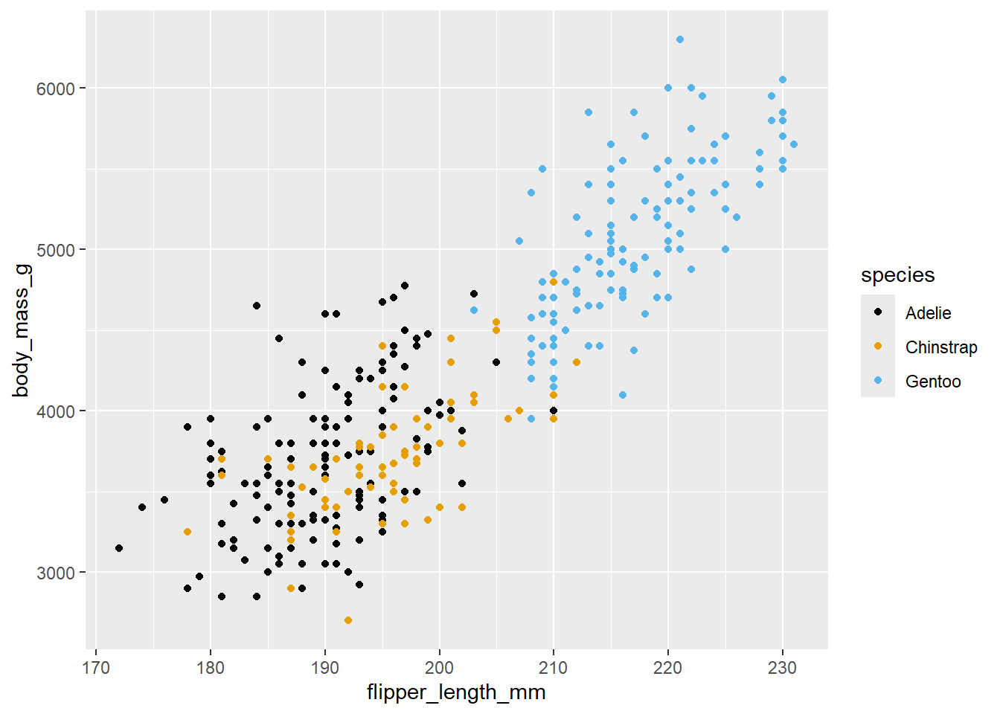
Notice that each layer ends with + and the next layer starts on a new line.
Now, it looks like there are a few clusters in our plots. The Gentoo penguins appear in one cluster, while the Adelie and Chinstrap penguins have their measurements in one cluster. For each species, the body mass is linearly related to the flipper length; although Gentoo penguins have larger body masses and longer flipper lengths than the other two species.
8.2.1.2 Overlaying lines and curves
A way to help visualize the relationship between the quantitative variables is to overlay a line of best fit.
ggplot(Data, aes(x = flipper_length_mm, y = body_mass_g, color = species)) +
geom_point() +
scale_color_colorblind() +
geom_smooth(method = "lm")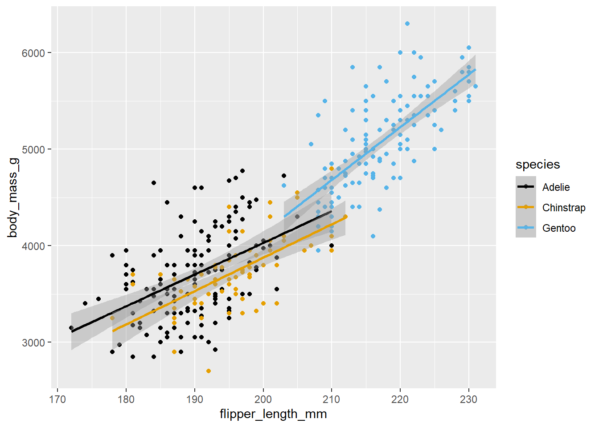
We are overlaying a line over each species, where represents the regression line of body mass against flipper length throughgeom_smooth and method = "lm". Notice that each line has a grey band around them? These are confidence intervals for the regression line. These can be removed if you mainly want to assess if the relationship is linear
ggplot(Data, aes(x = flipper_length_mm, y = body_mass_g, color = species)) +
geom_point() +
scale_color_colorblind() +
geom_smooth(method = "lm", se = FALSE) If the observations fall evenly on both sides of the line, the relationship can be approximated by a line. Overlaying regressions lines only make sense if the relationship is linear. If the relationship is nonlinear, we should overlay loess curves, by changing
If the observations fall evenly on both sides of the line, the relationship can be approximated by a line. Overlaying regressions lines only make sense if the relationship is linear. If the relationship is nonlinear, we should overlay loess curves, by changing method inside geom_smooth:
ggplot(Data, aes(x = flipper_length_mm, y = body_mass_g, color = species)) +
geom_point() +
scale_color_colorblind() +
geom_smooth(method = "loess", se = FALSE)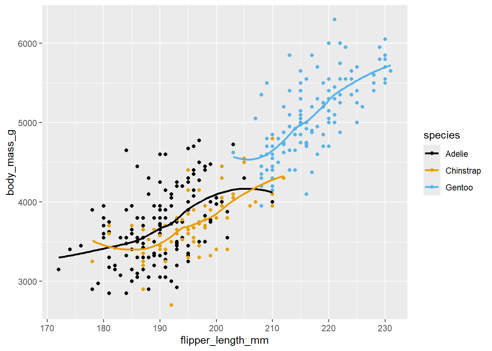
With real data, relationships are rarely perfectly linear, and so a judgment call has to be made if loess curves or linear regression lines are more appropriate. In this example, the curves are pretty close to being straight lines, so using linear regression lines may be chosen as they are simpler than curves.8.2.1.3 Adding titles and labeling axes
Now, we are ready to add the a layer to label the axes and give a title to the plot via a layer called labs:
ggplot(Data, aes(x = flipper_length_mm, y = body_mass_g, color = species)) +
geom_point() +
scale_color_colorblind() +
geom_smooth(method = "lm", se = FALSE) +
labs(title = "Body Mass and Flipper Length of Penguins",
x = "Flipper length (mm)", y = "Body mass (g)",
color = "Species" )
8.3 Visualizing Two Categorical Variables
A bar chart is often used to visualize the relationship between two categorical variables. Perhaps we want to see if the different species of penguins tend to live in different islands. The most basic bar chart can provide the number of each species in each island:
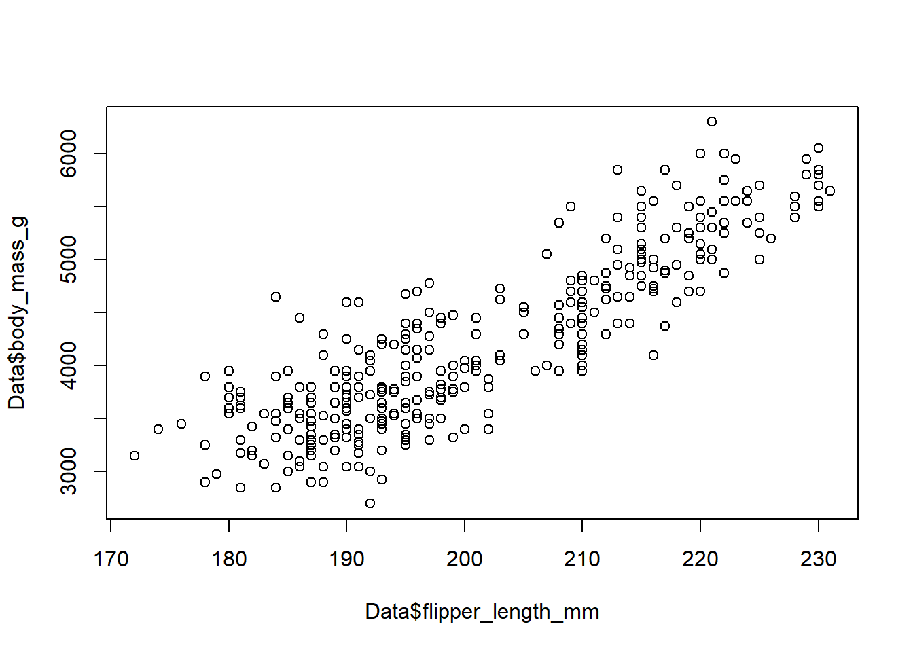
The predictor isisland and the response variable is species. For bar charts, place the response variable in the fill argument.
Notice we use geom_bar() instead of geom_point(). The geom tells the ggplot() function what kind of visualization we want.
We can see there are an unequal number of penguins in each island. So using proportions, rather than counts, will be more useful:
 In Biscoe island, we have mostly Gentoos and some Adelies. In Dream island, we have a fairly even proportion of Adelies and Chinstrap. Torgensen island is the island of Adelies. Since the proportions of species are so different across the islands, it appears that the island and species are related. If there is no relationship, the proportion of each species would be the same across the islands.
In Biscoe island, we have mostly Gentoos and some Adelies. In Dream island, we have a fairly even proportion of Adelies and Chinstrap. Torgensen island is the island of Adelies. Since the proportions of species are so different across the islands, it appears that the island and species are related. If there is no relationship, the proportion of each species would be the same across the islands.Notice the label of the y-axis is weird? How would you add a title and change the labels of each axes so they make more sense?
8.3.1 Tables
We can also create two-way tables to summarize the data from two categorical variables. These functions are from base R.
table(Data$island, Data$species)##
## Adelie Chinstrap Gentoo
## Biscoe 44 0 124
## Dream 56 68 0
## Torgersen 52 0 0To find proportions of each species in each island:
prop.table(table(Data$island, Data$species), margin = 1)##
## Adelie Chinstrap Gentoo
## Biscoe 0.2619048 0.0000000 0.7380952
## Dream 0.4516129 0.5483871 0.0000000
## Torgersen 1.0000000 0.0000000 0.0000000margin = 1 means we want the proportions in each row to add up to 1. Use 2 for columns. We have placed the predictor in the rows here.
8.4 Visualizing a Quantitative Variable Across a Categorical Variable
Suppose we want to see if the body mass of the penguins differ across the species. We can create side by side boxplots
ggplot(Data, aes(x = species, y = body_mass_g)) +
geom_boxplot()
A boxplot represents these values: minimum (lower end of whisker), first quartile (lower end of box), median (line in box), third quartile (upper end of box), and maximum (upper end of whisker). Dots represent outliers based on some rule. For the Chinstraps, we see an outlier that is bigger than the rest and another outlier that is smaller than the rest. For the Chinstraps, the lower and upper ends of the whiskers represent the values that are the minimum and maximum that are not considered outliers.
We can see that Gentoos tend to be larger than Adelies and Chinstraps. The body mass of Adelies and Chinstraps are similar.
How would you add a title and change the labels of each axes so they make more sense?
We can also use density plots of body mass and use different colors for each species and arrive at a similar conclusion.
ggplot(penguins, aes(x = body_mass_g, color = species)) +
geom_density() Areas under the density curve represent proportion of observations in that range. For example, most Chinstraps have body masses between 3000g and 4500g.
Areas under the density curve represent proportion of observations in that range. For example, most Chinstraps have body masses between 3000g and 4500g.How would you add a title and change the labels of each axes so they make more sense?
8.4.1 Base R
As a quick example using base R. For side by side boxplots:
boxplot(Data$body_mass_g ~ Data$species) ##y ~ x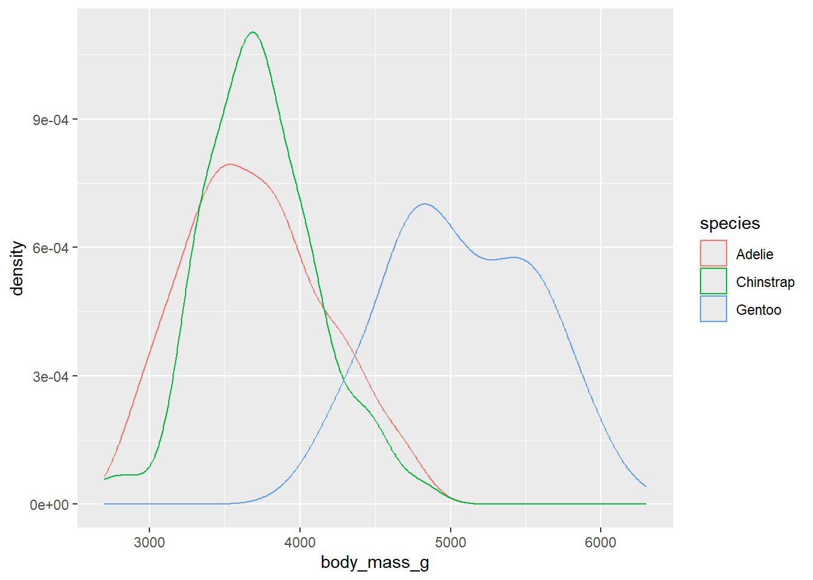
Using density plots for each species is cumbersome in base R.
8.5 Adding an Additional Categorical Variable
Most of these plots visualize two variables. In Section 8.2.1.1, we have seen with the scatterplot that in addition to two quantiative variables, we can use color to incorporate a categorical variable.
To incorporate another categorical variable, we can use what ggplot() calls a facet_wrap. It will create the visualization across each value of the categorical variable in the facet_wrap. For example,
ggplot(Data, aes(x = flipper_length_mm, y = body_mass_g, color = species)) +
geom_point() +
scale_color_colorblind() +
geom_smooth(method = "lm", se = FALSE) +
labs(title = "Body Mass and Flipper Length of Penguins",
x = "Flipper length (mm)", y = "Body mass (g)",
color = "Species" ) +
facet_wrap(~island)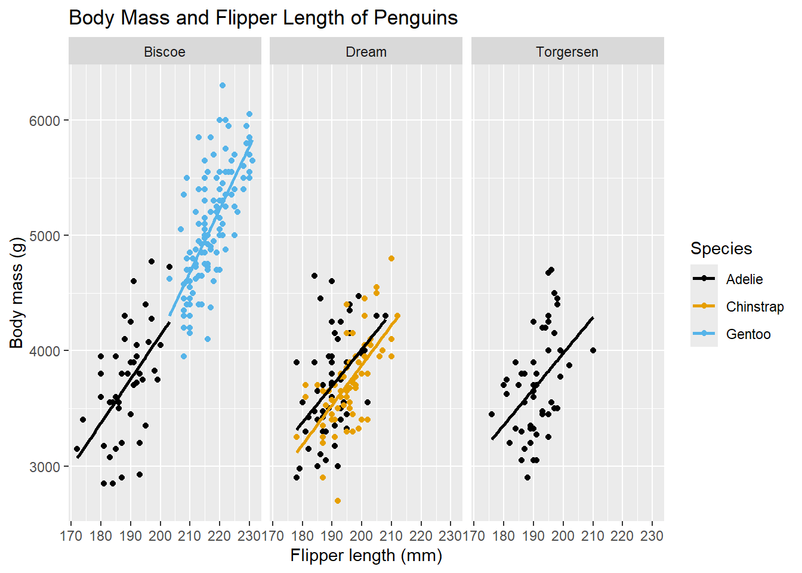
8.6 Visualizing Single Variables
Thus far, we have looked at visualizing two (or more) variables. In such visualizations, we usually want to see two (or more) variables are related.
Oftentimes, we need to see how are the values of a single variable distributed. Again, our choice of visualization depends on whether the variable is categorical or quantitative.
8.6.1 Single Categorical Variable
A bar chart can also be used for a single categorical variable:

By default, a bar chart showing counts is displayed. If we want proportions instead:
ggplot(Data, aes(x = species, y = after_stat(prop), group = 1)) +
geom_bar()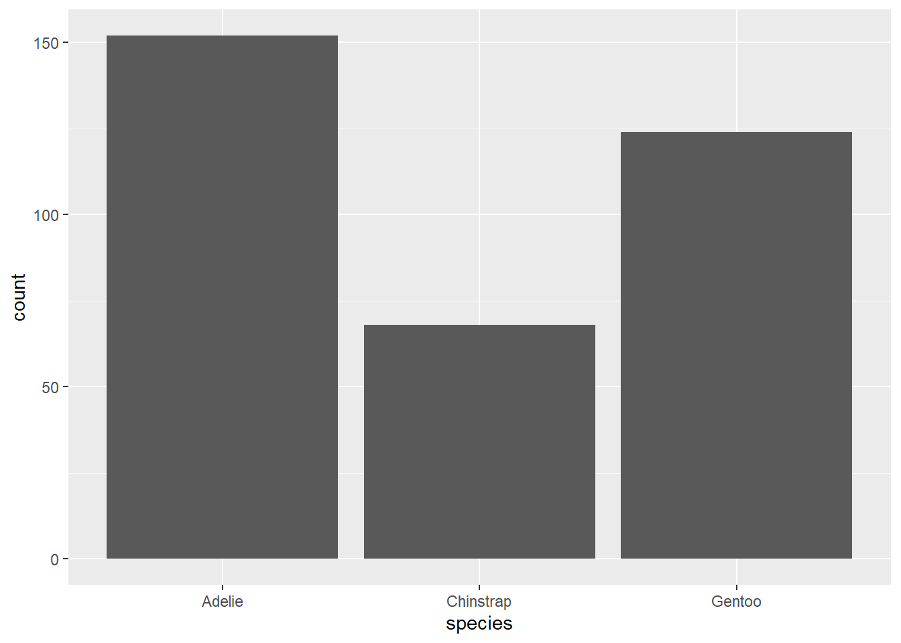
The argumenty = after_stat(prop) tells the function that we want the proportions on the y axis. group = 1 means we want the proportions across all bars to add up to 1.
If you want to change the order of the species that are displayed:
Data$species <- factor(Data$species, levels=c("Gentoo","Adelie","Chinstrap"))
ggplot(Data, aes(x = species, y = after_stat(prop), group = 1)) +
geom_bar()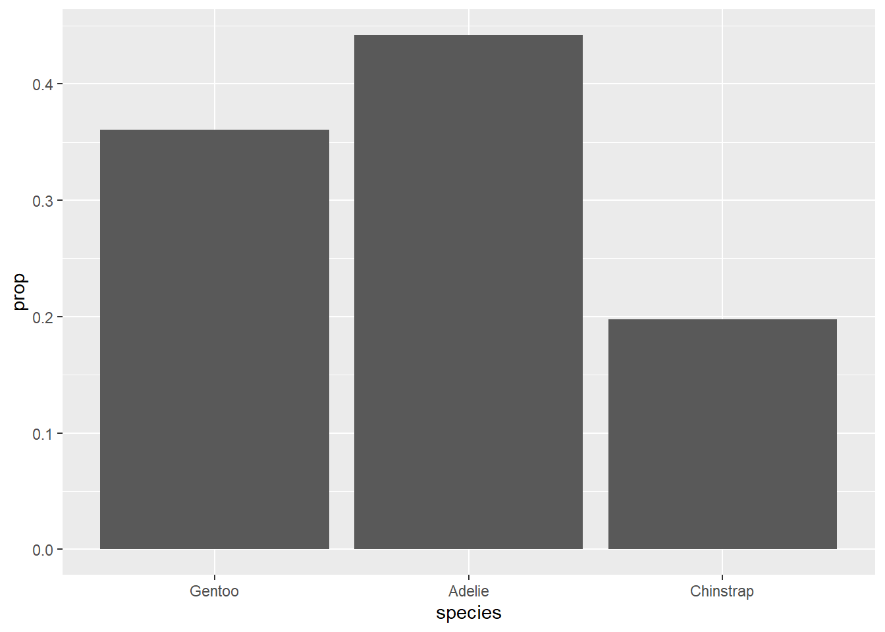
Changing the order may not make much sense in this example, but they will if the categorical variable is ordinal. In such variables, there is an order in the values of the categories. For example, shirt size.Tables can also be easily created:
table(Data$species)##
## Gentoo Adelie Chinstrap
## 124 152 68
prop.table(table(Data$species))##
## Gentoo Adelie Chinstrap
## 0.3604651 0.4418605 0.19767448.6.2 Single Quantitative Variable
A boxplot or a density plot are commonly used to summarize the distribution of a single quantitative variable.
ggplot(Data, aes(y = body_mass_g)) +
geom_boxplot()
ggplot(Data, aes(x = body_mass_g)) +
geom_density()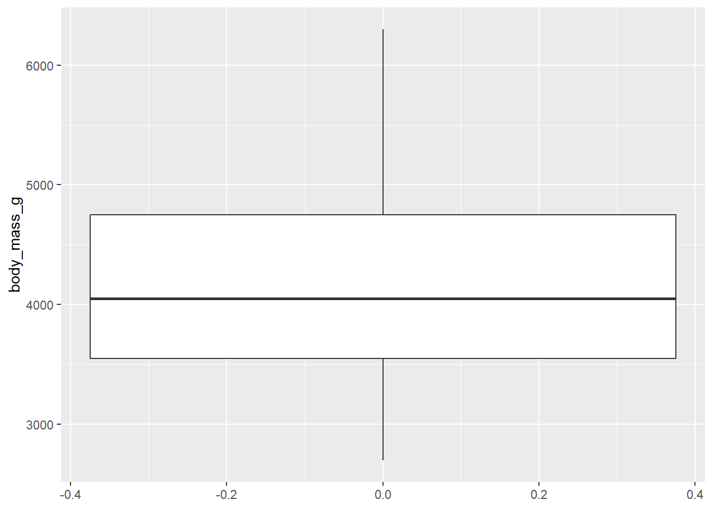
8.7 Visualizations from Simulations
You may realize that ggplot() assumes you are working with a data frame. However, when running your own simulations, results are often stored in other kinds of data structures such as vectors and matrices. In such instances, using a base R function to create visuals may be more efficient, as we can skip a step by not needing to create a data frame. For example, we simulate 20 values from a standard normal and want a plot to show their values:
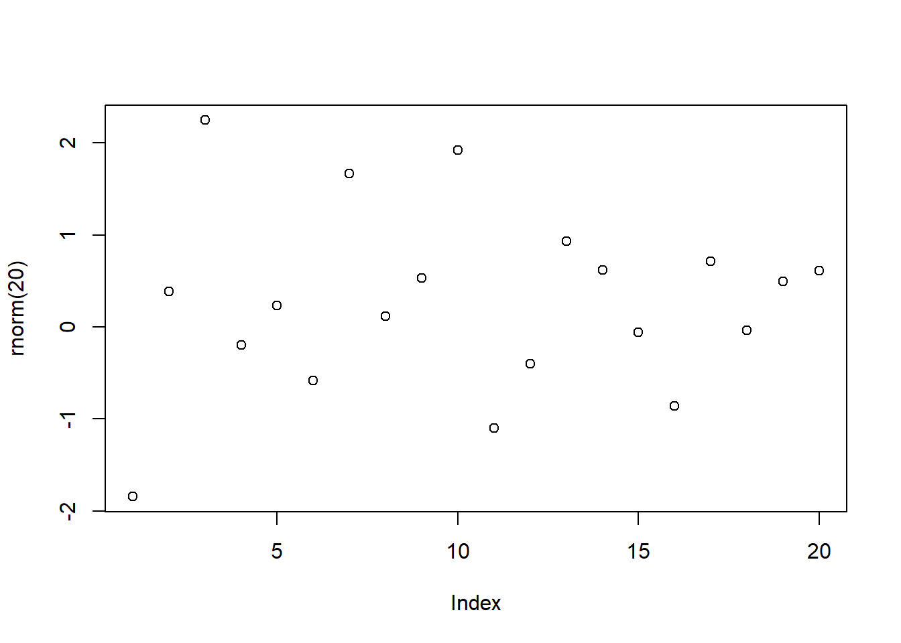
y <- rnorm(20)
x <- 1:20
newDF <- data.frame(x,y)
ggplot(newDF, aes(x = x, y = y)) +
geom_point()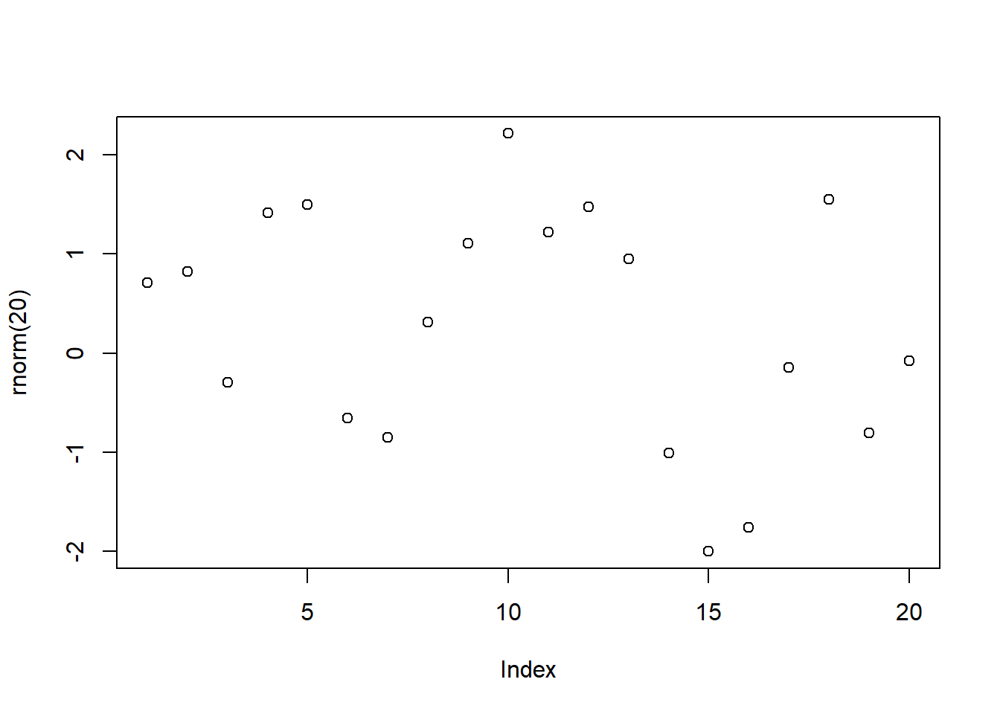
8.8 ggplot vs Base R
So which to use? ggplot() produces nicer visuals with much more customization, but base R can be quicker to type up.